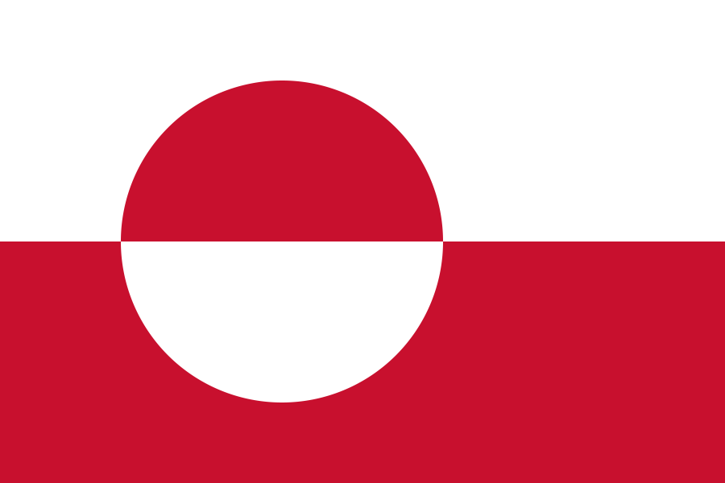
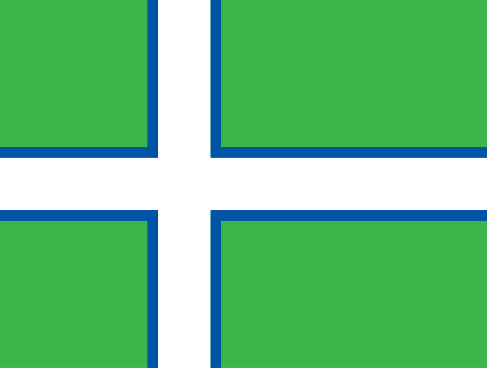

Welcome to my website, Greenland for tourists!
In this website, you will learn about the culture, history, language, and more!
Discover the beauty of Greenland, from the culture center of Nuuk, to the colorful houses of Qaqartoq, and the north-eastern fjord of Scoresby Sund!
 This is the official flag and the first proposed flag of Greenland. The first proposed flag was a green, white, and blue Nordic cross
The first flag Greenland was proposed by Aĸigssiaĸ Møller, Leif Aidt, Erik Hammeken, Peter Fr. Rosing and Finn Lynge in 1973